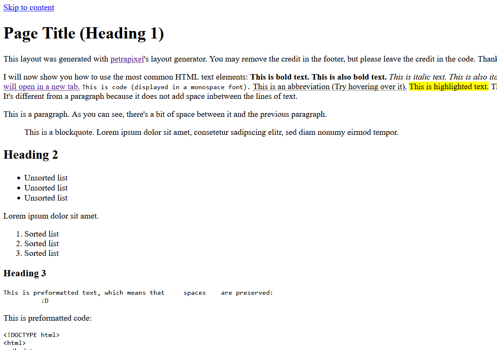

Layout Generator
You can use my layout builder to generate a code for your website. The generated code will include HTML, CSS and (optionally) basic JavaScript. The generated layout will be responsive for all screen sizes.

Features:
- ✓ choose site width, header, footer, sidebars, colors, font, font size, margins, paddings, etc
- ✓ styled basic content elements (headings, blockquote, code, images, ...)
- ✓ css variables for easy changes later
- ✓ code comments for your comprehension
- ✓ mobile responsive (+ options)
- ✓ basic accessibility + semantic elements
- ✓ optional javascript to load your layout
- ✓ no jquery or other unnecessary bloat
You can request features in the comment section below, don't be shy!
If you have questions or feedback, please use the comment section at the end of the page! Don't be shy!
If you like the generator, please share it on your page! You could use my button:

Examples
Here are some examples of layout generated with my tool: (Click to enlarge.)
How to use
On the generator page, use the provided settings to choose a layout that fits the website you want to make. With every change, the preview (on the right half of the screen) will update. Once you're happy, click the "Get Code" button to get the code.
HTML:
This is your base for any page on your website. Paste the code into all of your page files (e.g. index.html, about.html, ...) and change the content however you want.
I highly recommend using an Online HTML Formatter if your editor doesn't format your code by default.
Adjusting File Paths:
If a page file is in a subfolder (= not on the same folder level as the CSS and JavaScript files) you need to adjust the paths in the HTML code to make sure the files are loaded correctly. Here's how:
Page file is in root folder (no subfolder): (No adjustment needed)
<link href="./style.css" rel="stylesheet" />
<script src="./layout.js"></script>Page file is in 1 subfolder (e.g. about/page.html): (Change ./ to ../)
<link href="../style.css" rel="stylesheet" />
<script src="../layout.js"></script>Page file is in 2 subfolders (e.g. about/old/page.html): (Change ./ to ../../)
<link href="../../style.css" rel="stylesheet" />
<script src="../../layout.js"></script>And so on. (Add one ../ for every folder level)
CSS:
This goes into style.css.
I highly recommend using Autoprefixer on this code for better browser compatibility.
If you need help understanding the grid rules which make up the layout, read the grid section of my positioning/layout tutorial!
JavaScript:
(If you've selected the "Load layout per JavaScript" option)
Create the file layout.js in the same folder as the style.css and paste the code in there. Just like the CSS the JavaScript is loaded on every page, so it's only necessary to create this file once.
The code should work as-is without making a change.
Use ${nesting} in the JavaScript file to output a relative path, e.g. <img src="${nesting}img/logo.png"> will output <img src="../img/logo.png"> if the current page is in a subfolder, etc.
Tip: Active menu links will be given the class active, so you can style them in the CSS,
e.g.nav a.active { ... }
Time to edit!
Once you've pasted the code into your files it's time to start editing the code however you like! Don't remove the credit in the code comment or the console.log statement. You may remove the credit in the footer and main content of the page.
Cache:
Not clearing your cache might result in you not seeing the changes on your page!
Common Issues
Generally, if something isn't looking the way you expect, try viewing your site in a different browser. If it looks right there, then it really is a cache issue. This means that your code/project is correct, but your browser is loading an old version of (parts of) your website. To solve the issue, make sure to empty your cache, which you should generally do after every big change.
If your website looks like this:
the CSS (and JavaScript) isn't loaded correctly.
Solution: Make sure that you have followed the tutorial above exactly. Specifically, make sure that:
- You have pasted the CSS code into the file
style.css - If the page you're viewing is not directly in the same folder as the
style.css, you need to edit the path to it.
See step 1 of the tutorial above. - All your file names are spelled correctly
- You have saved all the changes you made in your files
Also make sure to empty your cache!
More Information
Rules
- You don't need to ask before using any of the code generated by my layout generator.
- Don't remove the credit in the code comment or the console.log statement.
- You may remove the credit in the footer and main content of the page.
- Don't claim the generated code as your own.
Credits
This generator was inspired by my own never-completed tumblr theme generator (rest in peace), as well as Sadgrl's Layout Builder, which you've probably heard of!
The color pickers are jscolor. I also used highlightjs.
For the downloadable .zip I used JSZip and FilerSaver.js.
The background images in the examples / random layouts are from sadgrl. The example content images are from picsum.photos.
Changelog
- 2025-07-18:
- + Download .zip feature
- 2025-02-12:
- + New Look!
- + More font choices
- + Custom font (e.g. Google font) option
- + Better color pickers
- + Preview zoom options
- + Format of generated code is better
- + More code comments in the generated code (so it's easier to understand)
- + Bugfixes
- 2024-08-20: Layout Generator created (Wayback Machine)
Planned Features
Here are some features I plan on eventually adding. It might take a while though.
- dark mode
- more widths
- neighborhood buttons (example content)
I spend many hours of my free time creating tools like these that I publish for free. If you'd like to say thanks, please share this tools with others and/or buy me a coffee (donate)!

{kind=link}
{kind=link}
{kind=link}
{kind=link}
{kind=link}
{kind=link}
This autumn I took in a stray cat that gave birth to 5 kittens in my apartment. As an unemployed uni student, the expenses have been rough for me. Currently I need 10 packages of wet food a day + dry food + cat litter + vet appointments. I also will have to get the mom spayed (200eur). I already spent over 400eur on them since October. I appreciate ANY help, no matter how small! Thank you!!!

.jpg)
Comments
Leave your questions, problems, suggestions, requests and thanks here!
To share very long code or error messages with me, please upload it to pastebin (or a similar site) and include the link. This is to make sure you don't hit the max character limit on comments.
Please empty your cache before asking questions. This will get rid of most problems.